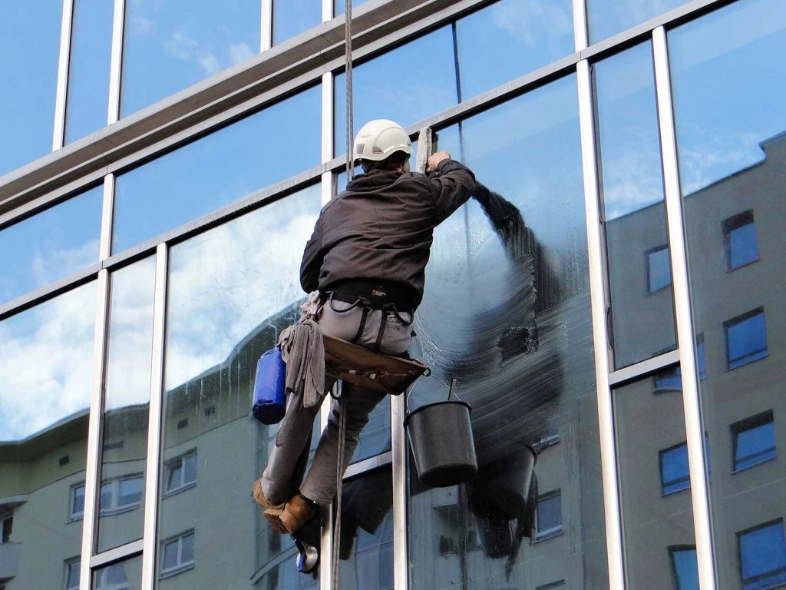
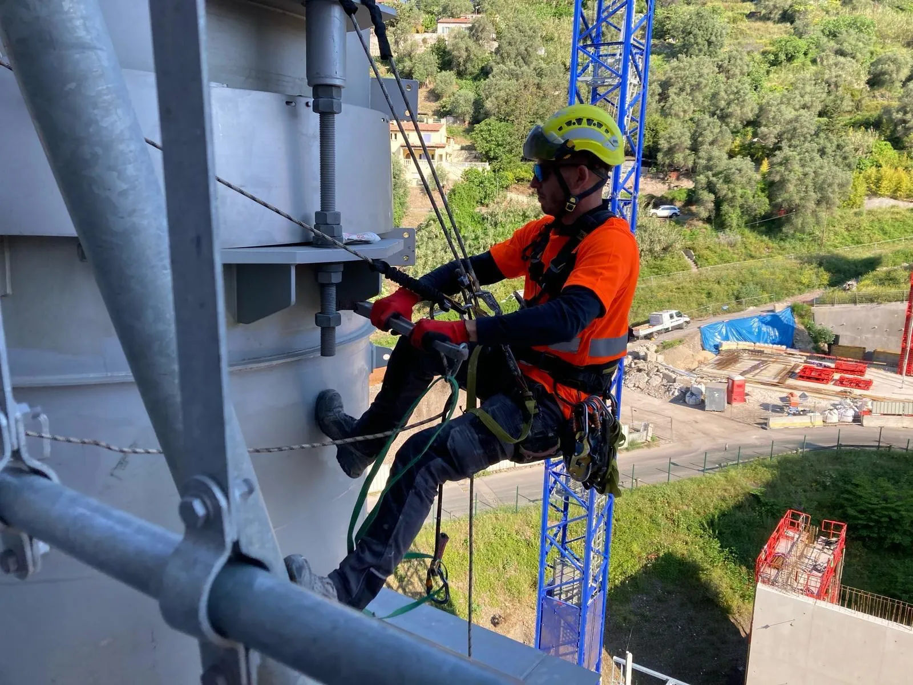
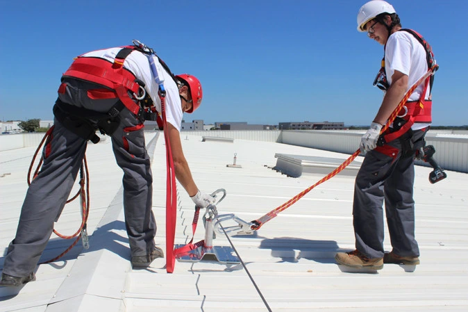
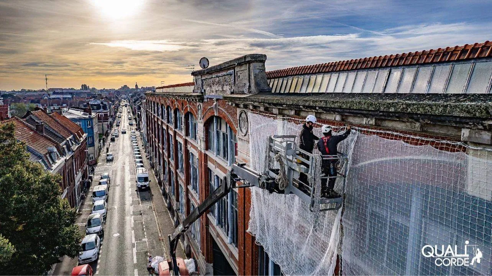
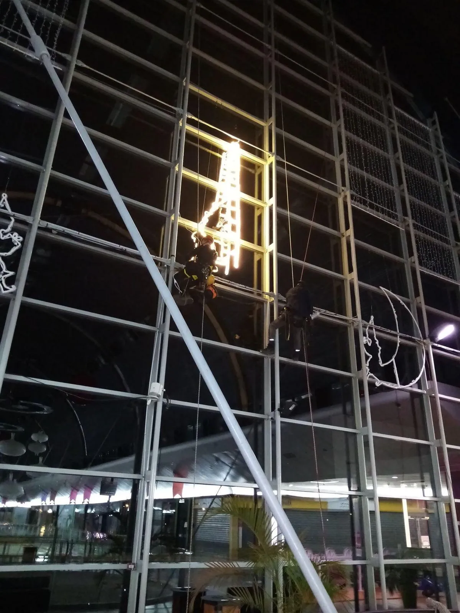
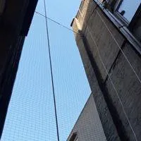
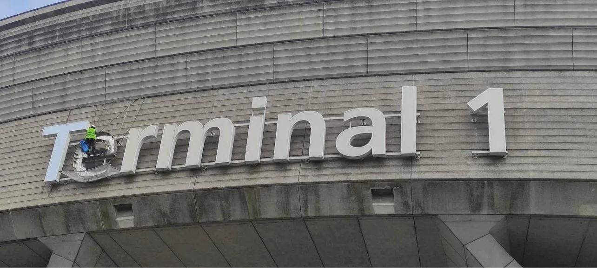

Cordiste Calais
Travaux sur Corde
Calais
NOS PRESTATIONS

Sur Calais, nos cordistes prennent en charge le lavage de vos vitres en hauteur avec rigueur et rapidité. Nous opérons sur toutes les façades, même les plus complexes, pour un résultat soigné et parfaitement sécurisé.
CONTACTEZ - NOUS
RAVALEMENT – Maçonnerie & Peinture
Sur Calais, nous menons vos chantiers de ravalement, peinture et maçonnerie en hauteur. Des interventions rapides, sans monter d'échafaudage, pour redonner toute sa beauté à votre façade.
CONTACTEZ - NOUS
INDUSTRIE (silos & maintenance)
Sur Calais, nos cordistes assurent le lavage et l'entretien de vos silos et installations industrielles, dans le respect des normes de sécurité, sans bloquer votre activité.
CONTACTEZ - NOUS
SECURITE – Lignes de vie & Filets
Sur Calais, nous posons lignes de vie, filets, ancrages et systèmes antichute pour assurer la sécurité de vos collaborateurs lors de leurs travaux en hauteur.
CONTACTEZ - NOUS
URGENCE – Purge, Bâchage & Filets
Une menace pèse sur votre bâtiment à Calais ? Nos cordistes se déplacent rapidement pour purger, bâcher et sécuriser vos façades avec des filets adaptés.
CONTACTEZ - NOUS
EVENEMENTIEL – Enseignes & Animations
Sur Calais, nous posons vos enseignes, banderoles et supports visuels en hauteur, même dans les zones les plus techniques. Des installations fiables et soignées pour vos événements.
CONTACTEZ - NOUS
ANTI-NUISIBLE – Pics & Filets de protection
Sur Calais, préservez vos façades et toitures grâce à nos dispositifs anti-nuisibles : pose de pics et de filets anti-pigeons réalisée par nos équipes spécialisées.
CONTACTEZ - NOUS
AUTRES – Éolien, Soudure, Électricité...
Sur Calais, nos cordistes prennent en charge vos chantiers techniques particuliers : maintenance d'éoliennes, opérations électriques, soudure et missions spécialisées en hauteur.
CONTACTEZ - NOUSINDUSTRIE (silos & maintenance) : Sur Calais, nous assurons le nettoyage et la maintenance de vos silos avec des opérations rapides, performantes et sécurisées.
Installation de SECURITE – Lignes de vie & Filets : Nos cordistes installent à Calais des lignes de vie, filets et ancrages pensés pour préserver vos équipes pendant les travaux en hauteur.
Nettoyage de vitres en hauteur : Sur Calais, nous prenons en charge le lavage de vos vitres, y compris dans les zones les plus inaccessibles, pour des surfaces nettes et brillantes.
RAVALEMENT – Maçonnerie & Peinture : Sur Calais, nous rénovons vos façades avec sérieux, en menant des chantiers rapides et sûrs, même dans les zones les plus complexes.
URGENCE – Purge, Bâchage & Filets : Nos cordistes se mobilisent en urgence à Calais pour mettre en sécurité vos bâtiments par la purge, le bâchage et la pose de filets adaptés.
EVENEMENTIEL – Enseignes & Animations : Sur Calais, nous posons vos enseignes et supports visuels en hauteur avec précision et rigueur.
ANTI-NUISIBLE – Pics & Filets de protection : Sur Calais, nos cordistes posent pics et filets anti-pigeons pour préserver durablement vos façades et toitures des nuisibles.
AUTRES – Éolien, Soudure, Électricité... : Sur Calais, nos cordistes prennent en charge vos projets techniques : soudure, maintenance d'éolienne, électricité et opérations spécialisées en hauteur.
DES CORDISTES DIPLOMES A CALAIS POUR TOUS VOS CHANTIERS EN HAUTEUR
Vous recherchez un cordiste à Calais pour vos travaux en hauteur ? Notre équipe d'experts intervient sur tous types de bâtiments, qu'ils soient résidentiels, commerciaux ou industriels. Forts de techniques d'accès sur corde maîtrisées et d'un équipement performant, nous menons des chantiers rapides, sécurisés et précis. Lavage de façades, peinture extérieure, pose de filets de sécurité, maintenance d'équipements ou réparation de toitures : nos cordistes interviennent dans tout le secteur de Calais avec efficacité et professionnalisme.
DES TARIFS COMPETITIFS
ET DES PRESTATIONS DE QUALITE
Chez Cordiste 62, la transparence et la satisfaction du client passent en priorité. Nos cordistes à Calais mènent des interventions sur-mesure adaptées à vos besoins, avec un devis gratuit, clair et sans engagement. Que ce soit pour une opération ponctuelle ou un contrat d'entretien régulier, nous vous garantissons un excellent rapport qualité-prix et des résultats durables.
DEVIS GRATUITUNE ENTREPRISE RECONNUE SUR LE SECTEUR DE CALAIS
En sollicitant Cordiste 62, vous profitez du savoir-faire d'une équipe expérimentée et exigeante. Nos techniciens couvrent tout le secteur de Calais pour des chantiers de lavage, de peinture, de maintenance ou de mise en sécurité. Nous mettons tout en œuvre pour assurer la sécurité sur les chantiers, la qualité des finitions et le respect des délais. Notre réputation s'appuie sur la confiance de nos clients et la constance de nos exigences.
DES SOLUTIONS SOUPLES ET PERSONNALISEES
INTERVENTIONS UNIQUES
CONTRATS D'ENTRETIEN SUR LA DUREE
Nos formules s'ajustent à vos besoins : intervention ponctuelle, suivi régulier ou contrat annuel. Chaque prestation est encadrée par des engagements clairs sur les tarifs, la qualité et les délais. Présents à proximité de Calais, nous accompagnons les particuliers, les entreprises et les collectivités dans l'entretien et la mise en sécurité de leurs bâtiments.
VOTRE ENTREPRISE DE TRAVAUX SUR CORDE A CALAIS
Cordiste 62 est votre partenaire local pour tous les travaux en hauteur à Calais et ses alentours. Nos cordistes interviennent sur des projets variés : nettoyage de vitres, ravalement de façades, réparation de toitures ou pose de dispositifs de sécurité.
Grâce à nos techniques d'accès sur corde, nous opérons efficacement là où les nacelles et échafaudages ne peuvent pas se rendre. Chaque chantier est mené avec soin, dans le respect des normes en vigueur et de vos contraintes de planning.
Disponibles 7j/7 et 24h/24, nos équipes se déplacent sur tout le secteur de Calais pour des interventions rapides, fiables et sécurisées. Faites confiance à des cordistes locaux expérimentés pour des résultats durables et impeccables.